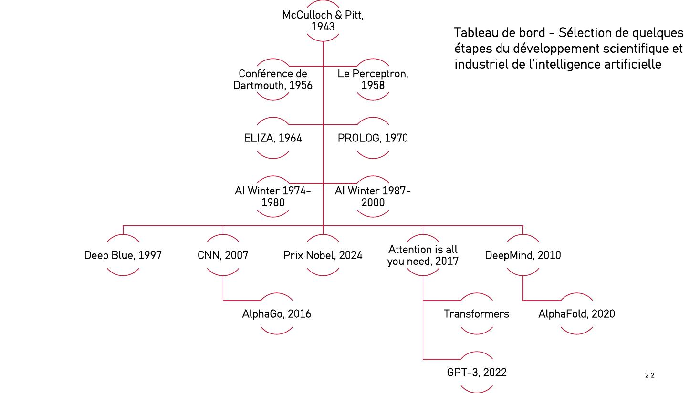
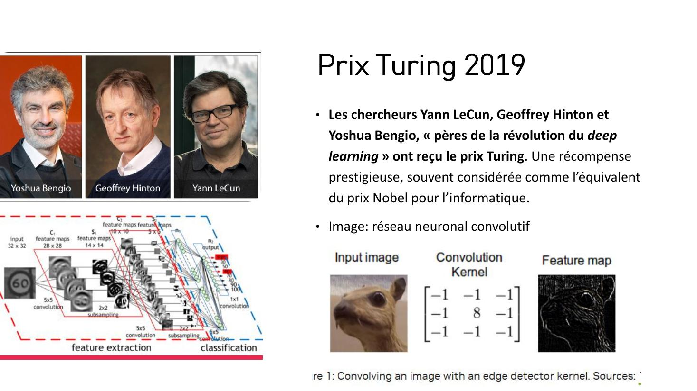

DIAPOSITIVES 21 à 28
De l’ENIAC aux trois Nobel de 2024, en passant par deux hivers.
La partie s’ouvre sur une photographie de salle de calcul des années 1940 — des opératrices devant des armoires à câbles — sous le titre « une brève histoire de l’IA ». L’image dit l’essentiel : cette histoire commence avec celle de l’informatique, et elle est plus ancienne que ChatGPT de quatre-vingts ans.

Les hivers sont ce que la version en huit dates escamote, et ils sont l’argument le plus utile contre l’emballement : le domaine a déjà promis deux fois, et déçu deux fois. Vingt-six ans de désenchantement cumulé sur les quarante ans qui séparent le Perceptron de DeepMind.
L’exposé ne décrit pas ELIZA : il en projette une session complète.
Eliza is a mock Rogerian psychotherapist. The original program was described by Joseph Weizenbaum in 1966. This implementation by Norbert Landsteiner 2005. ELIZA: Is something troubling you ? YOU: Men are all alike. ELIZA: What is the connection, do you suppose ? YOU: They're always bugging us about something or other. ELIZA: Can you think of a specific example ? YOU: Well, my boyfriend made me come here. ELIZA: Is it important to you that your boyfriend made you come here YOU: He says I'm depressed much of the time. ELIZA: I am sorry to hear that you are depressed. YOU: It's true. I am unhappy. ELIZA: Can you explain what made you unhappy ? YOU:
Le choix de cette séquence est excellent pour un public de café philo : ELIZA ne comprend rien — elle renvoie la phrase en la retournant — et pourtant les utilisateurs de Weizenbaum s’y confiaient, au point que son auteur en conçut de l’inquiétude. Soixante ans avant les agents conversationnels, la question de l’anthropomorphisme était posée, et par un programme de quelques centaines de lignes.
Le premier modèle computationnel du neurone. La diapositive montre Frank Rosenblatt devant sa machine — une armoire d’interconnexions réglées à la main. L’exposé renvoie à un clip d’archive des années 1950-60 et à l’article de Cornell sur ce professeur « qui ouvrit la voie à l’IA soixante ans trop tôt ».
Deux images côte à côte, et une question :
| Deep Blue contre Kasparov (1997) | AlphaGo contre Lee Sedol (2016) |
|---|---|
| Une machine qui calcule des coups selon des règles et une évaluation écrites par des humains. | Une machine qui a appris à jouer, et dont les coups surprennent ses propres concepteurs. |
Dix-neuf ans séparent les deux victoires, et elles ne sont pas de même nature : c’est exactement le passage du symbolique au statistique posé en fiche 5, rendu visible par deux parties de jeu.
Yann LeCun, Geoffrey Hinton et Yoshua Bengio, « pères de la révolution du deep learning » — récompense souvent considérée comme l’équivalent du Nobel pour l’informatique.

John J. Hopfield et Geoffrey E. Hinton, pour leurs contributions à la science des réseaux neuronaux et de l’intelligence artificielle. Hopfield a créé une mémoire associative capable de stocker et de reconstruire des images et d’autres motifs ; Hinton a inventé une méthode capable d’analyser des données de façon autonome pour en extraire des propriétés et identifier des éléments particuliers dans les images.
Le fait notable, et l’exposé y insiste ailleurs : Hinton figure dans les deux prix, et c’est le même Hinton qui annonce désormais la fin de l’humanité (fiche 4). Le lauréat et le « doomer » sont la même personne.
David Baker, Demis Hassabis et John Jumper, pour la prédiction de la structure tridimensionnelle des protéines assistée par l’IA, à partir de leur séquence d’acides aminés.
Deux Nobel scientifiques la même année, dans deux disciplines différentes, pour des travaux d’IA : c’est l’argument des techno-optimistes rendu en une diapositive. Et Hassabis est le fondateur de DeepMind, déjà présent à la date de 2010 sur la frise.